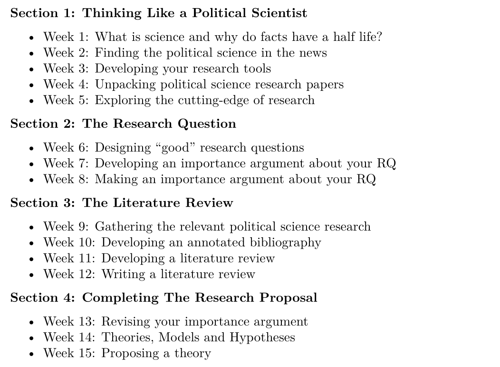
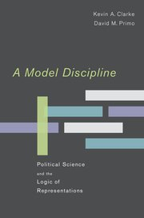
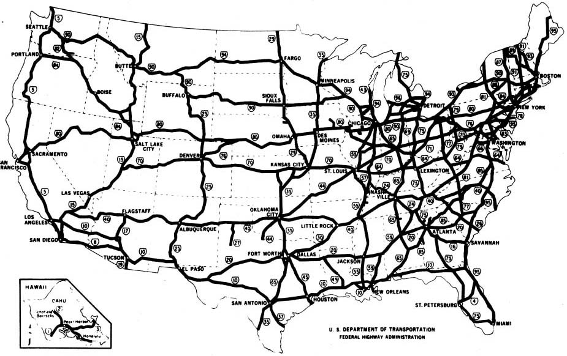
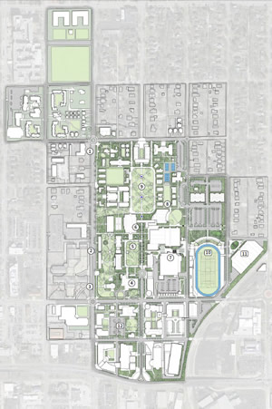

Today’s Agenda
Designing a Research Proposal
- Introduction to theories, models and hypotheses
Justin Leinaweaver (Spring 2026)
Course Outline
Baglione (2019) Chapter 5
Defining Terms
What is a model? (p114-117)
What is a hypothesis? (117-120)
Competing Definitions of “Theory” or “Model”
Donovan and Hoover (2014)
- “…a set of related propositions that suggest why events occur in the manner that they do” (32).
Mingst and Arreguin-Toft (2017)
- “A theory is a set of propositions and concepts that combine to explain phenomena by specifying the relationships among the propositions. Theory’s ultimate goal is to predict phenomena” (72).


Maps are:
Neither true nor false
Limited in their accuracy
Partial representations
Useful for only some purposes
A reflection of the interests of the designer

Theories / Models are:
Neither true nor false
Limited in their accuracy
Partial representations
Useful for only some purposes
A reflection of the interests of the designer
Median voter theorem
Evolution
Neorealism
Gravity
Principal-Agent theory
The big bang
Bargaining model of war
Natural selection
Duverger’s Law
Marxist theory
Liberal institutionalism
Democratic Peace theory
PLSC 160: Inquiry in Political Science
Designing a “good” research proposal requires:
A compelling research question,
A foundation in the academic literature, and
A clear theoretical story to test
Directed Acyclic Graphs (DAGs)
‘Directed’ = Paths indicate direction of effect
‘Acyclic’ = No immediate feedback loops
‘Graphs’ = Visualized
Directed Acyclic Graphs (DAGs)
What explains the decision by Americans to vote in an election?

Why do countries contribute money to fund the United Nations?

For Next Class
Diagram the Model from a Research Article
Unpack the model from Fortna, Lotito & Rubin (2018)
Details on Canvas